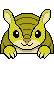

CusucoMap
Únete a CusucoMap
CusucoMap seguirá siendo gratis para todos, pero mantenerlo funcionando cuesta dinero.
Por $3.99 al mes puedes ayudar a mantener el proyecto y recibir:
- ⭐ Insignia FUNDADOR en el mapa
- ⛏️ 3 búsquedas especiales al día — explora un área o busca un Pokémon en todo el mapa
- 📱 Acceso anticipado a la app Android, con notificaciones más confiables
Quiero apoyar CusucoMap
¿Prefieres no suscribirte? Cualquier aporte, del tamaño que sea, ayuda a mantener CusucoMap funcionando - ¡gracias!
Es un proyecto comunitario y experimental; tu apoyo ayuda a que siga existiendo.

CusucoMap respeta tu privacidad
Tu ubicación se usa únicamente en tu dispositivo para mostrar dónde estás en el mapa.
No enviamos, almacenamos ni registramos tu ubicación.
Pokémon no encontrado
Ese pokémon ya no está disponible. Puede que haya desaparecido o que el enlace haya caducado.
¿Qué quieres buscar?
¿Qué especie buscar?
¿Deseas enviar un cusuco aquí?
Esta búsqueda tarda hasta 30 segundos.
10+
20+
30+
Reconectando…